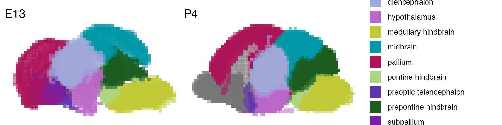
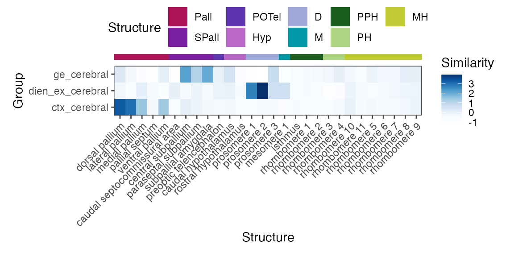
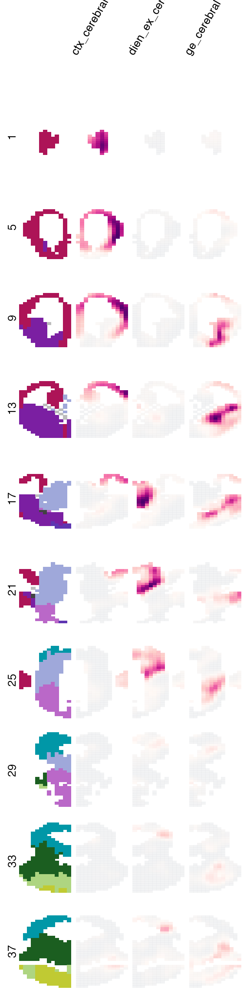

getting_started.RmdThis vignette gives you an introduction on how to use VoxHunt to swiftly explore the Developing Mouse Brain Atlas ISH data, find brain structure-specific markers and project organoid cells to spatial brain maps.
VoxHunt provides a number of convenient functions to explore the Allen Developing Mouse Brain Atlas data computationally using R. To do so, you first need to point VoxHunt to the ABA gene expression data, which you can download here. Now, we’ll point VoxHunt to the location of these files:
load_aba_data('~/path/to/data')Per default, VoxHunt will not load all of the data at once, but only when we require it.
Now that we have the data, we can start exploring. For instance, you can plot the E13.5 and P14 mouse brain with annotated brain structures:
p1 <- voxhunt::plot_annotation('E13')
p2 <- voxhunt::plot_annotation('P4', show_legend=T)
p1 + p2
We can also plot the expression of different genes over these voxel maps:
genes <- c('NEUROD6', 'EOMES', 'DCN', 'DLX1', 'DLX2', 'GBX2', 'OTX2', 'GATA3', 'PAX8')
plot_expression('E15', genes = genes) & no_legend()Here we plotted just the sagittal view with a maximum intensity projection for all voxels, sometimes this hides the expression of certain genes. VoxHunt also allows you to define the sections that will be used in the plot:
plot_expression('E15', genes = 'DCN', slices = 5:10) & no_legend()We can also plot the expression of multiple genes for many coronal sections at the same time:
plot_expression(
'E15',
genes = genes,
view = 'slice',
slices = c(4, 12, 24, 30, 35, 40)
) & no_legend()In addition to plotting well-known canonical markers, we can also perform DE to find specific markers for brain structures we are interested in:
marker_df <- structure_markers('E15', annotation_level = 'custom_4')
hippo_markers <- marker_df %>%
filter(group=='hippocampus') %>%
top_n(2, auc)
plot_expression('E15', genes=hippo_markers$gene, nrow=1) & no_legend()Ok, now to the interesting part: mapping single cell transcriptomes. Projecting single cells to these spatial maps based on several hundred genes can be very informative about cell type composition of the organoid. First, we load an Seurat object. The example case we use here contains 2300 cells from cerebral organoids.
## orig.ident nCount_RNA nFeature_RNA cluster
## cerebral_HC00013 cerebral 3313.979 3030 ctx_cerebral
## cerebral_HC00030 cerebral 3080.682 2422 ctx_cerebral
## cerebral_HC00036 cerebral 3097.781 2295 ctx_cerebral
## cerebral_HC00040 cerebral 3683.972 4453 ctx_cerebral
## cerebral_HC00043 cerebral 2301.335 1389 dien_ex_cerebral
## cerebral_HC00046 cerebral 2912.589 2368 ge_cerebralBefore we start mapping the cells, we’ll do some feature selection to get region specific genes from the ABA:
regional_markers <- structure_markers('E13') %>%
group_by(group) %>%
top_n(10, auc) %>%
{unique(.$gene)}
head(regional_markers)## [1] "OTP" "MEST" "DLK1" "PEG10" "CDH8" "PLXNC1"Now let’s use these markers to map our single cells to the brain. The group_name parameter refers to a metadata column that groups the data into clusters or cell types.
vox_map <- voxel_map(
example_seurat,
stage = 'E13',
group_name = 'cluster',
genes_use = regional_markers
)
print(vox_map)## A VoxelMap object
## 3 groups mapped to
## 9510 voxels in the E13 mouse brain
## based on 183 featuresWe can first look at the coarse-grained level, what brain structures these cell types are most similar to:
plot_structure_similarity(vox_map, cluster=F)
Here, we can already appreciate that our cell types have distinct similarity patterns to certain brain structures, i.e. cortical neurons are similar to the pallium, GE neurons to the subpallium and diencephalic neurons to the diencephalon.
We can further explore our voxel map more spatially. The plot_map() function lets us plot spatial similarity maps in a number of different ways. Per default, it will show us a sagittal view of the projection for each of the groups:
However, as we have seen with the expression plots, we can also slice these voxel maps however we want to reveal structures that might be hidden in the sagittal projection. For instance, the highest correlation for the GE neurons seem to be hidden somewhere inside the brain, so lets look at fewer coronal sections:

Finally, VoxHunt also allows you to explore similarity maps interactively in 3D with a little help of plotly:
plot_map_3d(
vox_map,
show_group = 'ctx_cerebral',
width = 800,
height = 600
)VoxHunt provides some basic plotting functions to visualize the similarity maps. Of course, you go beyond those if you are familiar with plotting in R. To turn a VoxelMap or ReferenceMap object into a data frame for plotting with e.g. ggplot(), VoxHunt provides some convenience functions that return either group (summarize_groups()) or structure summaries (summarize_structures()) of the map:
group_map <- summarize_groups(vox_map)
head(group_map)## # A tibble: 6 x 27
## voxel group corr stage structure_name x y z structure_id level_1
## <chr> <fct> <dbl> <chr> <chr> <dbl> <dbl> <dbl> <dbl> <chr>
## 1 E13pt… ctx_… 0.524 E13 superficial s… 18 26 0 111220560 forebr…
## 2 E13pt… ctx_… 0.512 E13 superficial s… 19 26 0 111220560 forebr…
## 3 E13pt… ctx_… 0.605 E13 superficial s… 15 25 0 111220560 forebr…
## 4 E13pt… ctx_… 0.578 E13 intermediate … 16 25 0 111220558 forebr…
## 5 E13pt… ctx_… 0.552 E13 periventricul… 17 25 0 111220556 forebr…
## 6 E13pt… ctx_… 0.540 E13 periventricul… 18 25 0 111220556 forebr…
## # … with 17 more variables: level_2 <chr>, level_3 <chr>, level_4 <chr>,
## # level_5 <chr>, level_6 <chr>, level_7 <lgl>, level_8 <lgl>, level_9 <lgl>,
## # level_10 <lgl>, custom_1 <chr>, custom_2 <chr>, custom_3 <chr>,
## # custom_4 <chr>, stratum <chr>, idx <dbl>, ge_annot <chr>, ctx_annot <chr>
struct_map <- summarize_structures(vox_map)
head(struct_map)## # A tibble: 6 x 4
## cell struct corr group
## <chr> <fct> <dbl> <fct>
## 1 ctx_cerebral caudal hypothalamus 0.0743 ctx_cerebral
## 2 dien_ex_cerebral caudal hypothalamus 0.0883 dien_ex_cerebral
## 3 ge_cerebral caudal hypothalamus 0.154 ge_cerebral
## 4 ctx_cerebral caudal septocommissural area 0.0292 ctx_cerebral
## 5 dien_ex_cerebral caudal septocommissural area 0.0920 dien_ex_cerebral
## 6 ge_cerebral caudal septocommissural area 0.0498 ge_cerebralIf you’d like to visualize the structure similarities in a low dimensional embedding of single-cell space (e.g. UMAP), you can use assign_cells() to assign each cell to the maximum correalting voxel. The resulting dataframe can then be joined with the embedding coordinates or added to the Seurat metadata for plotting.
cell_assignment <- assign_cells(vox_map)
head(cell_assignment)## # A tibble: 3 x 27
## voxel corr group stage structure_name x y z structure_id level_1
## <chr> <dbl> <chr> <chr> <chr> <dbl> <dbl> <dbl> <dbl> <chr>
## 1 E13pt… 0.671 ctx_… E13 intermediate … 6 19 2 111220558 forebr…
## 2 E13pt… 0.580 dien… E13 intermediate … 20 18 8 16409 forebr…
## 3 E13pt… 0.471 ge_c… E13 periventricul… 14 12 6 15837 forebr…
## # … with 17 more variables: level_2 <chr>, level_3 <chr>, level_4 <chr>,
## # level_5 <chr>, level_6 <chr>, level_7 <lgl>, level_8 <lgl>, level_9 <lgl>,
## # level_10 <lgl>, custom_1 <chr>, custom_2 <chr>, custom_3 <chr>,
## # custom_4 <chr>, stratum <chr>, idx <dbl>, ge_annot <chr>, ctx_annot <chr>